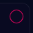
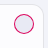
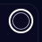
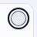
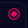
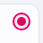

Radio
A round mark that holds one choice among a few, inside the tile that is its label: a payment provider, a Steam offer. It is the native radio drawn by one file, so a group keeps arrow-key travel and a screen reader keeps its set. Everything on this page is drawn by design/system/components/radio.css through index.css.
Anatomy
The tile is this page's own stand-in for the Payment panel's provider tile (sample providers, D-124); the radio is the atom.
| Part | Class or element | What to change there |
|---|---|---|
| The press | .radio (the tile's inner span, or a label) | the gap and the body ink when it carries words of its own; in a tile it draws only the mark |
| The ring | .radio > input | the native input drawn by the file: --size-check, a circle, the tile's fill and a hairline ring |
| The dot | input:checked::after | half the ring's width, in the act's pink; the ring thickens to 2px in the same pink |
| The group | one name on every input | which radios exclude each other; the page's markup, not a class |
Variants and sizes
One form, no size and no emphasis. The size below is read from the rendered ring, not from the stylesheet.
- Content = in a choice tile. The tile is the label and the press; the radio is its mark, pinned in a corner by the tile. A radio with a line of words of its own takes the Checkbox's row and is the same atom.
- The tile's colours on its lit face are the tile's. On the Payment panel's chosen tile the ring and the dot turn white over the pink to violet plate; that rule is written by the tile, and this atom keeps its own pink.
| Content | Unchosen | Chosen | Where it stands |
|---|---|---|---|
| In a choice tile | a provider on Deposit; a Steam offer (node 5.3) when it is drawn |
When to use
A radio holds one choice of a short, visible set where every option should be seen before one is picked: which provider takes the card ("Provider A", "Provider B", microcopy 4.1-17 and 4.1-18). Every option is on screen at once, so the person compares them where they stand. The words name the option, not the feeling, and where the choice costs money the cost is in the tile (design principle 3).
Rule and anti-rule
Use it
Select provider on Deposit: two or three tiles, one name, one chosen. A choice the person makes once, in a form, before pressing the act.
Take another component
A short run that changes what is shown at once, such as a sort or a sticker count 0 to 3, is a Segmented control. A yes that several rows may hold is a Checkbox. A long list is the Popover menu in its select form. A press that does something is a Button.
States
Live at rest, on this page's theme: point at the radio, press it, reach it with Tab and move with the arrow keys.
Snapshots of the same instances, dark on the left and light on the right, taken with reduced motion so each shows the face the state settles on. The radio itself is shot, not its tile; the chosen ring is a twin at rest, set by the product's own :checked, and focus is shot on the native input, the element Tab reaches.


--radio-line-lit

--line-focus

--radio-line-lit, --bg-act- The same answer, said once: a radio with words of its own has the states of the Checkbox on the same rules, and a chosen radio under the pointer keeps its ring: hover lights only an unchosen one.
- No active state and no disabled look.
kit.cssdraws no press on a radio and none is added. A radio stays live and refuses with its reason beside it (D-58), so it draws no refusal ring.
node design/kit/tools/shoot-states.js http://localhost:8765/ radio # re-shoot after a change to radio.css or its tokens node design/kit/tools/shoot-states.js http://localhost:8765/ radio --check # step 9: fails if a snapshot drifted
In the code
| Token | Kind | Dark | Light |
|---|
Read live from tokens.css. The ground, the dot and the ring's focus come from the semantic level; the ring at rest and the pink ring under the pointer and on a chosen radio are component tokens because no line role is lavender or pink (decided at the round's gate). Geometry, type and motion come straight from the primitives.
File: design/system/components/radio.css, loaded by design/system/index.css in the atoms' group.
<label class="pay-panel__prov"><span class="radio"><input type="radio" name="prov" checked></span> ... </label> <label class="radio"><input type="radio" name="offer"><span>Steam offer</span></label>
Stands on: Deposit, in the Payment panel's provider tiles. Until step 8 that screen still reads kit.css; step 6 moves its markup onto this file's forms by the rename map. The tile that holds the radio, with its pinned corner and its lit face, is the Payment panel's (step 7), not this atom's.